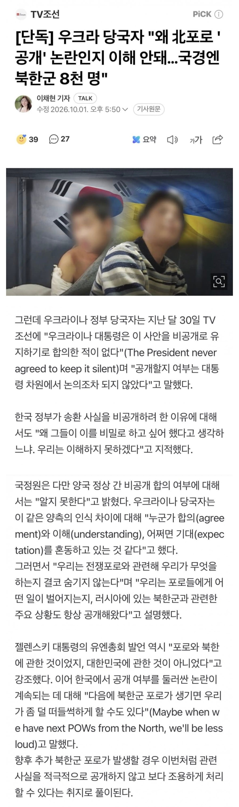

"우크라이나 대통령은 이 사안을 비공개로 유지하기로 합의한 적이 없다(The President never agreed to keep it silent)"
"누군가 합의(agreement)와 이해(understanding), 어쩌면 기대(expectation)를 혼동하고 있는 것 같다"
한 쪽은 합의 했다고 하고
한 쪽은 합의 없다고 하고
합의문 까면 젤렌스키 놈 구라 바로 들통날텐데
어서 합의문 까야함 ㄹㅇ

"우크라이나 대통령은 이 사안을 비공개로 유지하기로 합의한 적이 없다(The President never agreed to keep it silent)"
"누군가 합의(agreement)와 이해(understanding), 어쩌면 기대(expectation)를 혼동하고 있는 것 같다"
한 쪽은 합의 했다고 하고
한 쪽은 합의 없다고 하고
합의문 까면 젤렌스키 놈 구라 바로 들통날텐데
어서 합의문 까야함 ㄹㅇ
매우 화가 나네
이지랄 하면서 지원?
외교 진짜 못하네
이새끼들은 진짜 외교를 할생각이 없는건지 무능한건지 모르겟음.
님이 생각하는 외교는 대체 뭐죠
우크라 주장으론 합의 자체가 없었다는데
그럼 최소 쌍방 오해에 최대 한국이 갑자기 싸움건 거 아님?
전쟁중인 국가가 무기지원이나 무기수출가능한 국가상대로 기싸움해서 자국에 도움될수잇는 기회를 날려먹는게 외교라고 생각안함.
우리나라 아직 북한이랑 전쟁 안 끝났는데
그럼 최중요 동맹국인 미국이 호르무즈 파병 요청한 거 빨리 파병 보내야겠네?
이왕 하는거 가급적 대규모로
그래야 우리나라에 도움되지
난 파병에 부분찬성입장임. 애초에 니가말하는 대규모파병이 어느정도인지는 모르겟는데 내가 생각하는 저 호르무즈 파병이라는게 해군파병인데 한국해군 상태에서 대규모파병은 힘들다고봄. 보내도 구축함 몇대보내는거겟지. 그리고 지금 우크라이나 얘기하는데 미국얘기는 왜함? 우크라이나랑 한국이 상호방위조약이라도 맺은게 있음? 니 의견은 뭐임? 한국이 우크라이나 지원하는게 맞다고봄?
님은 싸우러온거 같음..
며칠 전부터 폴란드 극우정당 횡령범 정치인 트위터 똥글까지 싹싹 퍼와서 주적은 우크라!로 도배하고 있어서 좀 성이 났음
애초에 전혀 증거 없이 한쪽의 일방적 주장인데 성범죄 유죄추정이랑 겹쳐보여서 상당히 불쾌하거든
그리고 크롤링이나 여타 상주하는 여론감시원도 있는 거 같고
흠...이건 나도 어느정도 공감함. 애초에 러시아가 여론조작하는거 어느정도 하는거같으니까
합리적으로 판단 하면 우크라이나가 자국 포로가 위험 하게 될 수 있는
저걸 합의 했다고 생각 되지 않아야 함
저거 합의 했다 들통나면, 러시아가 명확히 검증된 포로라도 비밀이라고 안 알려 줘도 뭐라 할게 없음
포로 관련은 서로 상호간의 신뢰로 유지 되는 건데
흥! 인정할 수 없어~
우크라맘이
아직도 있네
러뽕새끼들만큼 이해안되는게 우맘충새끼들임 ㅋㅋㅋㅋㅋㅋㅋㅋ
외교적 비밀 협약을 문서나 합의문으로 남긴다는 말은 머리털나고 님한테 첨 들어봅니다
우크라이나 말이 길어지는 게 찐빠 났든가 다른 속셈이 있었든가 같네
합의문 공개가 없다면 합의가 없다고 봐야지 뭔 소리냐?
전쟁 중이라도 서로 정확한 수치는 공개 안해도 포로로 끌려간 애들 적십자 관련 단체가 포로 대우 확인 해주고
포로가된게 확실한 애들은 생사 여부나 포로 대우 그런건 서로 정보 공유 하고 전사자 교환도 꾸준히 진행 중임
근데 저거 숨겼다가 걸리면 러시아도 앞으로 공개 안해도 우크라이나는 뭐라고 할 수 없는데
그런 리스크를 감내하고 비밀 합의를 함?
병사를 숫자로 나타내도 실재론 누구의 아버지 아들 자식인데 한명 한명 추적 하고 관리 하는게 전쟁이다
진짜 그런 약속 했다면 그새끼를 족쳐야 되고 젤렌스키가 했다면 대통령에서 쫏겨날거 같은데?
어떤 새끼는 북한 포로랑 우크라이나 포로랑 교환도 할수 있어서 유리 하다던데
러시아가 미쳤냐? 자국 포로 안 대려오고 동양놈 두놈 데려오게?
진짜 무기원해서 합의한게 있다면
그건 대통령직 걸고 했다고 봐야 되는데
그걸 우크라이나 국민이 이해해 줄거 같진 않음
내말이 이해가 안된다면 과거 6.25에서 포로 수용소 관련 글을 읽어 보던가
베트남 전쟁에서 왜 미군 병사가 공개 안된 포로들 이름 모조리 기억 했다가 나중에 석방 되고 이름 죄다 공개 해서 난리 났는지
아조우스탈 제철소 전투에서 항복 하고 포로로 잡혀 간 애들 처음엔 러시아가 공개 안했다가
나중에서야 국제 압박을 받고 공개 후 포로 교환으로 석방 했는지 생각 해봐라
포로 관리는 서로 상호간의 약속으로 진행 되는 거야
그냥 잡혔다고 내가 맘대로 하는게 아니라 서로 최대한 투명 하게 한다는 가정 하게 유지 되는 거란다
이딴 소리 했다고 우크라이나 맘 만들지 말고
나도 우크라이나 좋아 하는것도 아니고 응원 하는 것도 아님
그리고 시발 어떤 병신 한국놈이 우크라이나 좋아해서 지지 하냐? ㅋㅋ
자기들 정보국끼리 총질하고
평소 외교 찐빠낸 것도 수두룩하며
외교 기조가 어쩌라는 식의 기조
게다가 우리나라 정부는 시종일관 합의했다 주장
난 아무리봐도 우리나라가 더 믿음이 가는데...
그래 러시아 좆집새끼들아 기싸움 쳐 해봐